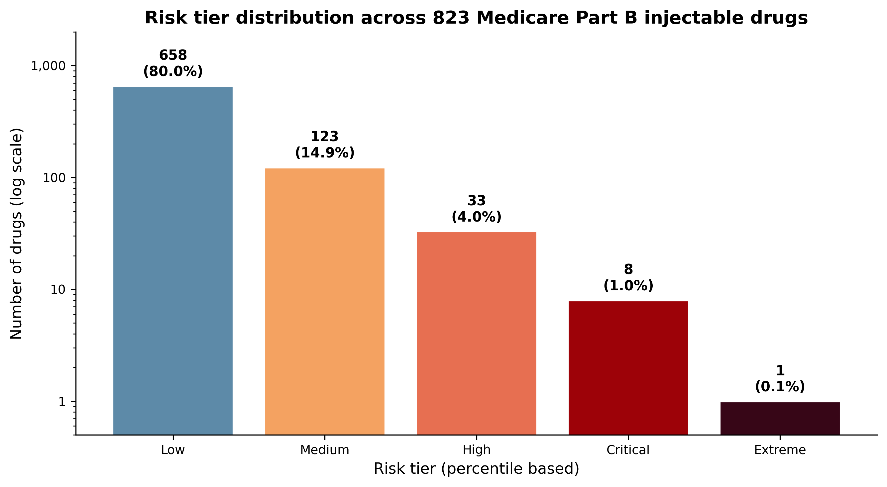
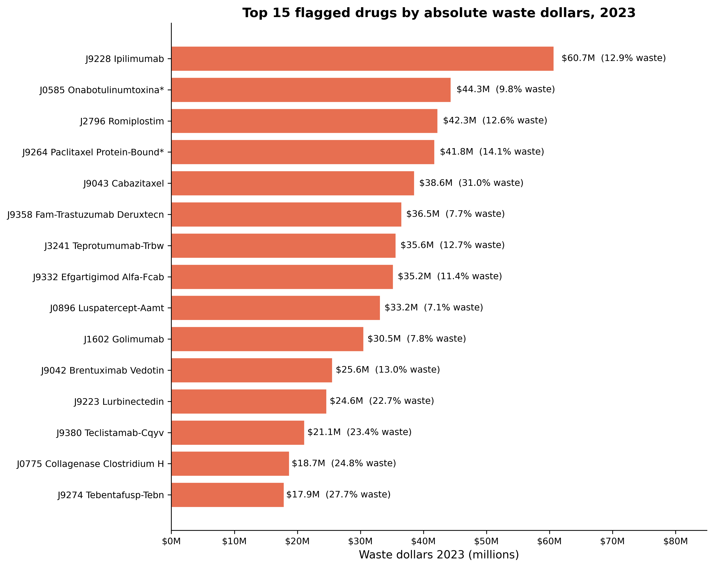
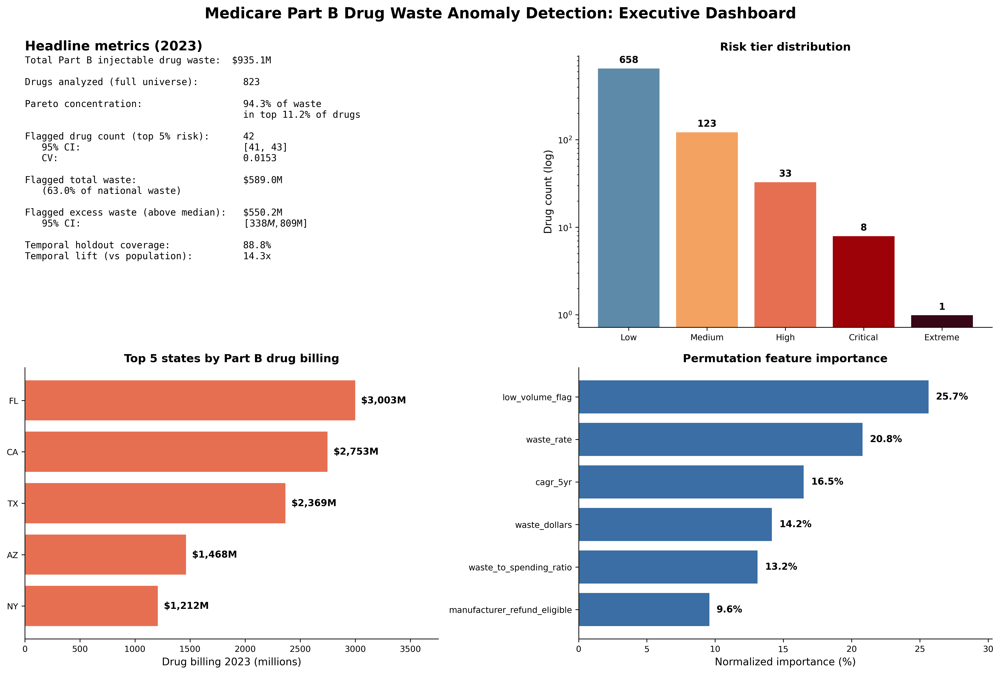

Medicare Part B Drug Waste Anomaly Detection
A drug level anomaly detection framework using CMS published discard amount data for Medicare Part B injectable drugs. The system computes per drug waste rates and excess waste against national baselines, identifies the small share of drugs that account for the large share of total waste, and provides a Pareto concentration analysis suitable for federal program integrity prioritization.
Methodology
The analytical universe is constructed from the CMS Medicare Part B Discarded Drug Units Public Use File for 2023, filtered to remove the aggregate Overall row, producing 823 individual injectable drugs. Each drug is characterized by its national Medicare allowed amount, administered amount, discarded amount, and computed waste rate.
The national total Medicare allowed amount across the universe is 52.66 billion dollars, with administered total of 51.73 billion dollars and discarded total of 935.08 million dollars, yielding a national waste rate of 1.78 percent.
Risk scoring uses excess waste dollars as the primary feature, with secondary features capturing waste rate and concentration. The top five percent of drugs by combined score (42 drugs) constitutes the flagged set, with bootstrap confidence intervals computed on the excess waste totals.
Key findings
Waste is heavily concentrated. The top five percent of drugs by waste account for 80.95 percent of national Part B drug waste. The top ten percent account for 92.88 percent. The top 11.2 percent (42 drugs) account for 94.27 percent of national waste.
Total waste in the flagged set is 589.01 million dollars, of which 550.15 million is excess above the national baseline rate. The flagged drugs alone represent 62.99 percent of the 2023 national drug waste total.
The concentration pattern indicates that federal program integrity attention on a small set of drug HCPCS codes can capture the majority of recoverable waste, with no need to expand analytical attention across the full 823 drug universe.
Selected figures



Verification
Every numerical claim in this project traces to a persisted result file in the public rebuild repository. Independent reviewers can reproduce the universe, the national totals, the Pareto concentration analysis, and the flagged drug set from the same CMS Medicare Part B Discarded Drug Units Public Use File.